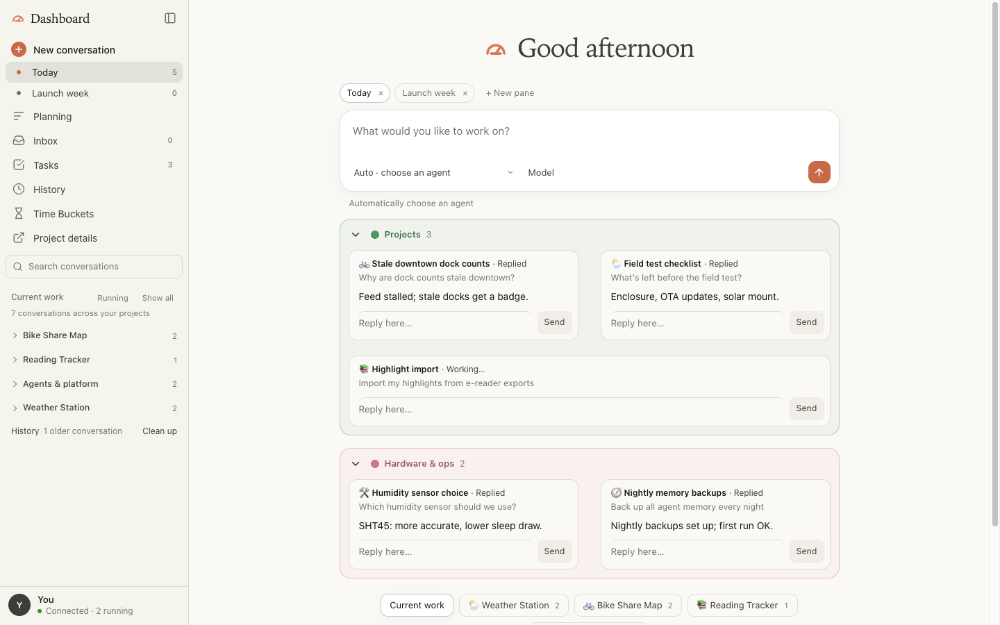

Agent Dashboard
A private home base for the AI agents that help run my projects (built on OpenClaw). I type a request once and it goes to the right specialist: a local embedding model matches it against each agent's profile, with an LLM router as the fallback. Conversations are grouped by project, live work streams in as it happens, and anything an agent is blocked on (an approval, a question) lands in one Inbox, kept separate from the to-do list, so nothing nags unless it needs me.
A nightly cleanup asks each idle chat's agent to save what mattered before the chat is archived.
Plain Node and vanilla JS with no dependencies or build step. It runs locally only and talks to the OpenClaw Gateway over its WebSocket protocol with least-privilege access.
